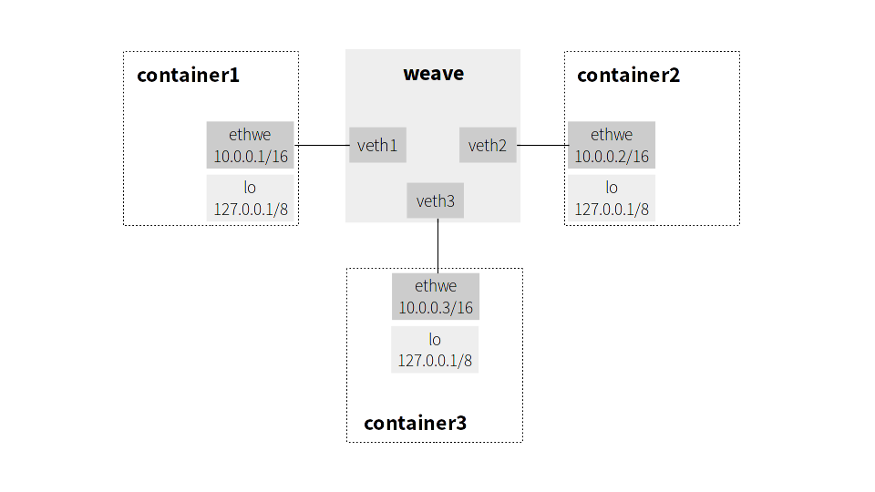

This blog post is about an interesting bug which helped to reveal limitations of the Go programming language runtime.
One day Alfonso from the Weave Scope team reported a mysterious bug in Weave Net: sometimes weave ps fails to list containers connected to the “weave” bridge with Cannot find weave bridge: Link not found. In other words, weave ps was not able to get information about the “weave” bridge network interface as it could not be found. Full bug report can be found here.
Before going down the rabbit hole, a bit of context. Each container in Weave network is attached via virtual ethernet interface pair, or veth, to an L2 Linux software bridge on the same host which runs containers. An example of such configuration is shown below:

To list IPv4 addresses of local containers in the weave network, one can run weave ps which runs weaveutil in an external process. The latter is implemented in Go and in a simplified way does the following:
1: import (
2: "github.com/vishvananda/netlink"
3: "github.com/vishvananda/netns"
4: )
5:
6: func main() {
7: for _, containerId := range os.Args[1:] {
8: containerAddr(containerID)
9: }
10: }
11:
12: func containerAddr(containerIDs) {
13: containerPid := docker.GetPid(containerID)
14:
15: bridge, err := netlink.LinkByName("weave")
16: if err != nil {
17: fmt.Fatalf("Cannot find weave bridge: %s", err)
18: }
19: indexes := getVethIndexesAttachedToBridge(bridge)
20:
21: // Enter network namespace of the container
22: ns, _ := netns.GetFromPid(containerPid)
23: runtime.LockOSThread()
24: defer runtime.UnlockOSThread()
25: hostNetNs, _ := netns.Get()
26: netns.Set(ns)
27:
28: links, _ := netlink.LinkList()
29: fmt.Println(filterAttachedLinks(links, indexes))
30:
31: // Return to the host network namespace
32: netns.Set(hostNetNs)
33: }The containerAddr function retrieves the list of all network interfaces attached to the Weave bridge and enters the given container namespace to filter container network interfaces which are attached to the bridge.
The failure happened at the line 15 which tries to get an information about the bridge via netlink.
The actual implementation of the affected version can be found here.
Luckily after a bit of experimentation, I was able to quite reliable reproduce the bug by creating 100 dummy Docker containers and issuing weave ps multiple times:
$ for i in $(seq 1 100); do docker $(weave config) run -td alpine /bin/sh; done
<..>
$ for i in $(seq 1 10); do weave ps >/dev/null; done
Cannot find weave bridge: Link not foundFirst thing to check was whether the weave bridge interface under some circumstances did not actually exist, maybe it had been removed. However, inspecting the kernel log with dmesg showed that it did not happen.
Next, the querying of network interfaces is handled by the Go netlink library which, as the name suggests, communicates with the kernel via netlink interface. So the next step was to check for bugs in the library. Unfortunately, tracing communication between the kernel and weaveutill via netlink socket with the handy nltrace tool revealed nothing interesting, as the netlink request was valid, and the kernel returned that the “weave” interface was not found.
The search for the cause was narrowed down to the implementation of weaveutil. As double checking the source code did not bring any success, I decided with the help of strace to see what happens in weaveutil from the Go runtime perspective (full log):
<...>
1: [pid 3361] openat(AT_FDCWD, "/proc/17526/ns/net", O_RDONLY) = 61
2: [pid 3361] getpid() = 3357
3: [pid 3361] gettid() = 3361
4: [pid 3361] openat(AT_FDCWD, "/proc/3357/task/3361/ns/net", O_RDONLY) = 62
5: [pid 3361] setns(61, CLONE_NEWNET) = 0
<...>
6: [pid 3361] socket(AF_NETLINK, SOCK_RAW, NETLINK_ROUTE) = 63
7: [pid 3361] bind(63, {sa_family=AF_NETLINK, pid=0, groups=00000000}, 12) = 0
8: [pid 3361] sendto(63, "\x20\x00\...", 32, 0, {sa_family=AF_NETLINK, pid=0, groups=00000000}, 12) = 32
9: [pid 3361] getsockname(63, {sa_family=AF_NETLINK, pid=3357, groups=00000000}, [12]) = 0
10: [pid 3361] futex(0xc820504110, FUTEX_WAKE, 1 <unfinished ...>
11: [pid 3361] <... futex resumed> ) = 1
12: [pid 3361] futex(0xd82930, FUTEX_WAKE, 1) = 1
13: [pid 3361] futex(0xc820060110, FUTEX_WAIT, 0, NULL <unfinished ...>
14: [pid 3361] <... futex resumed> ) = 0
15: [pid 3361] recvfrom(63, <unfinished ...>
16: [pid 3361] <... recvfrom resumed> "\x4c\x00\...", 4096, 0, {sa_family=AF_NETLINK, pid=0, groups=00000000}, [12]) = 236
<...>
17: [pid 3361] clone( <unfinished ...>
18: [pid 3361] <... clone resumed> child_stack=0x7f19efffee70, flags=CLONE_VM|CLONE_FS|CLONE_FILES|CLONE_SIGHAND|CLONE_THREAD|CLONE_SYSVSEM|CLONE_SETTLS|CLONE_PARENT_SETTID|CLONE_CHILD_CLEARTID, parent_tidptr=0x7f19effff9d0, tls=0x7f19effff700, child_tidptr=0x7f19effff9d0) = 3365
<...>
19: [pid 3361] setns(62, CLONE_NEWNET <unfinished ...>
20: [pid 3361] <... setns resumed> ) = 0
<...>
21: [pid 3365] sendto(65, "\x2c\x00\...", 44, 0, {sa_family=AF_NETLINK, pid=0, groups=00000000}, 12) = 44
22: [pid 3365] getsockname(65, {sa_family=AF_NETLINK, pid=3357, groups=00000000}, [12]) = 0
23: [pid 3365] recvfrom(65, "\x40\x00\...", 4096, 0, {sa_family=AF_NETLINK, pid=0, groups=00000000}, [12]) = 64
24: [pid 3365] close(65) = 0
25: [pid 3365] write(2, "Cannot find weave bridge: Link not found\n", 41First, a goroutine entered a network namespace (lines 1-5 in the strace log) of a container, which corresponds to lines 22-26 of the Go code above.
Next, it received a list of the container network interfaces via netlink (lines 6-16), line 27 in the Go code.
After recvfrom returned, the runtime created a new OS thread, PID 3365 (lines 17-18).
Go implements concurrency by multiplexing goroutines onto OS threads. So, to prevent from stalling a system when a goroutine issues a blocking syscall, the Go runtime might create a thread before entering or exiting the syscall. This was the case for clone(2) above.
However, the runtime does not not pass the CLONE_NEWNET flag to clone. Therefore, the newly spawned thread ran in the same network namespace as the parent (PID 3361) did.
As the parent returned to the host network namespace after clone took place (lines 19-20), the child ended up running in the container namespace.
At some point the child was scheduled to run a goroutine which executed containerAddr function (lines 21-23 in the strace log). Because the weave bridge belonged to the host network namespace, and the child was in the container network namespace, obviously the bridge could not be found. This caused the error of the bug report.
This finding raised a question whether we can safely change a namespace in Go. Unfortunately, the answer is no, as we do not have almost any control on scheduling goroutines.
One could argue that locking a goroutine with runtime.LockOSThread could help, but a) the goroutine might spawn a new goroutine which would run in a wrong namespace b) locking does not prevent the runtime from creating a new OS thread for scheduling.
In addition, it is not possible to guarantee that a new OS process implemented in Go and started from Go with os/exec will run in a given namespace. See discussion for further details.
Having all the limitation in mind, the fix to our problem is to execute every function which requires changing a namespace in a separate OS process. Execution happens via nsenter wrapper to make sure that all runtime threads are in the same namespace. Unfortunately, the fix introduces not only big penalties in performance, but also it makes our code less readable and less debuggable.
Considering the discovered limitations, the vast adoption of Go within container software raises a few eyebrows.